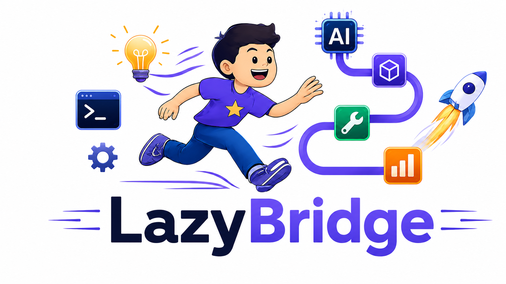
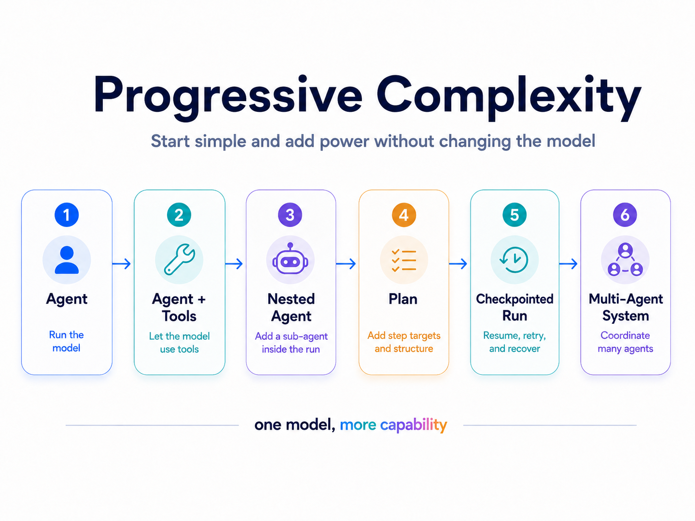
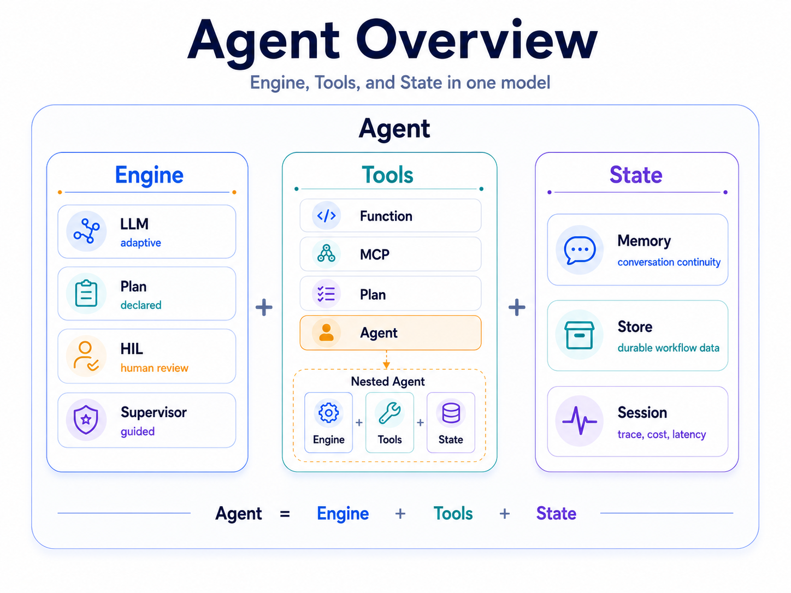
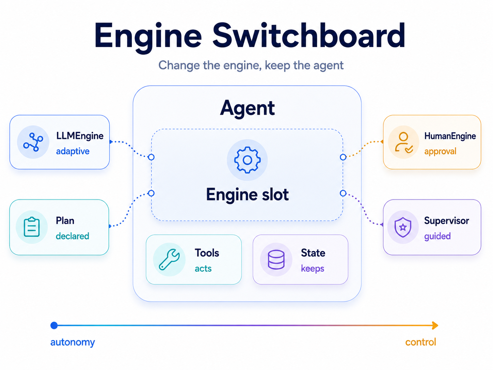
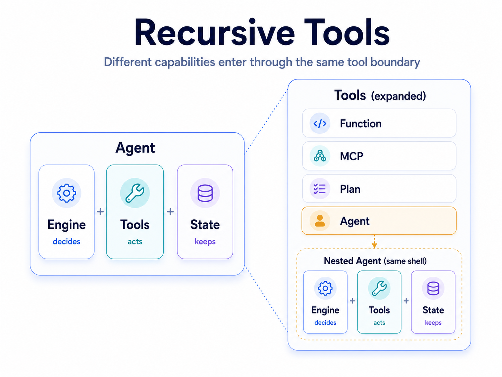
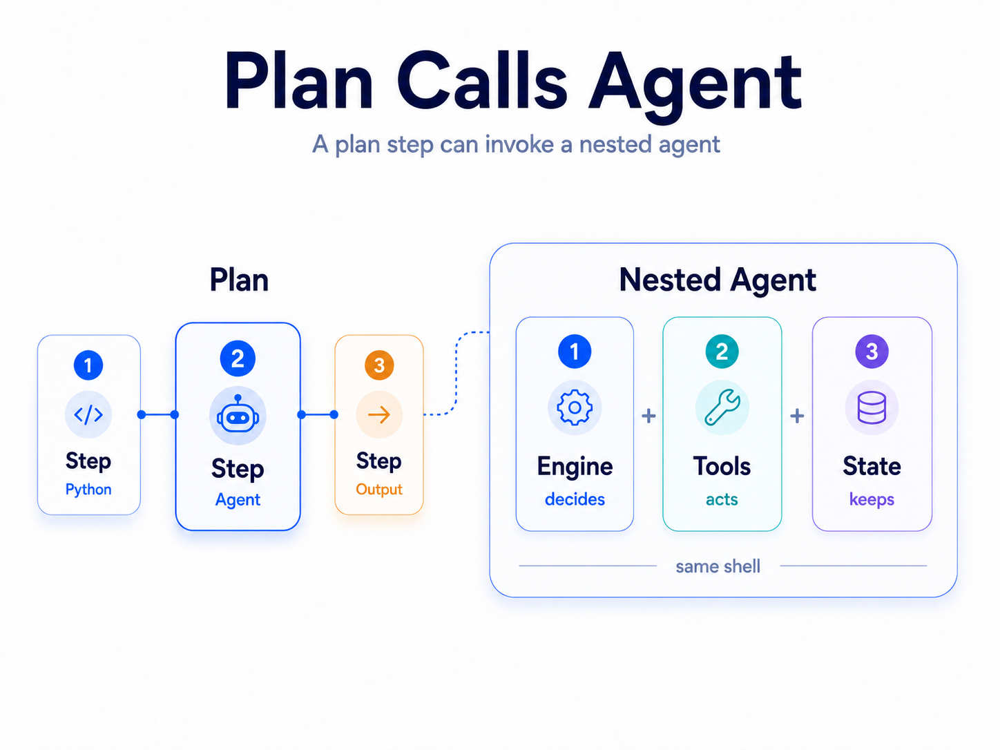
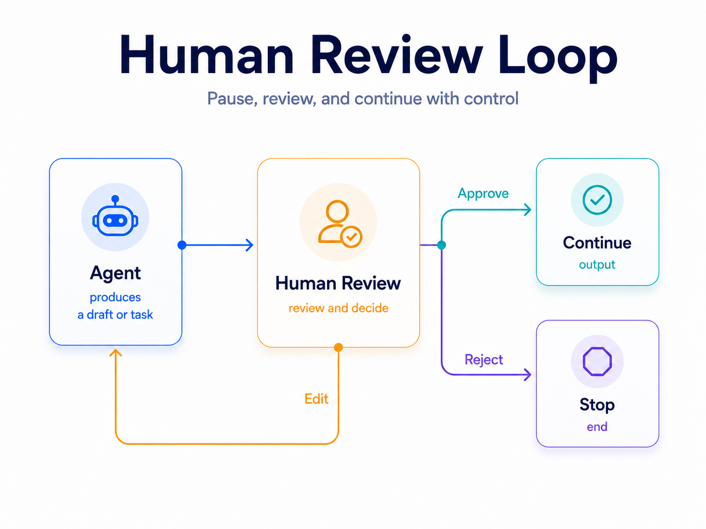
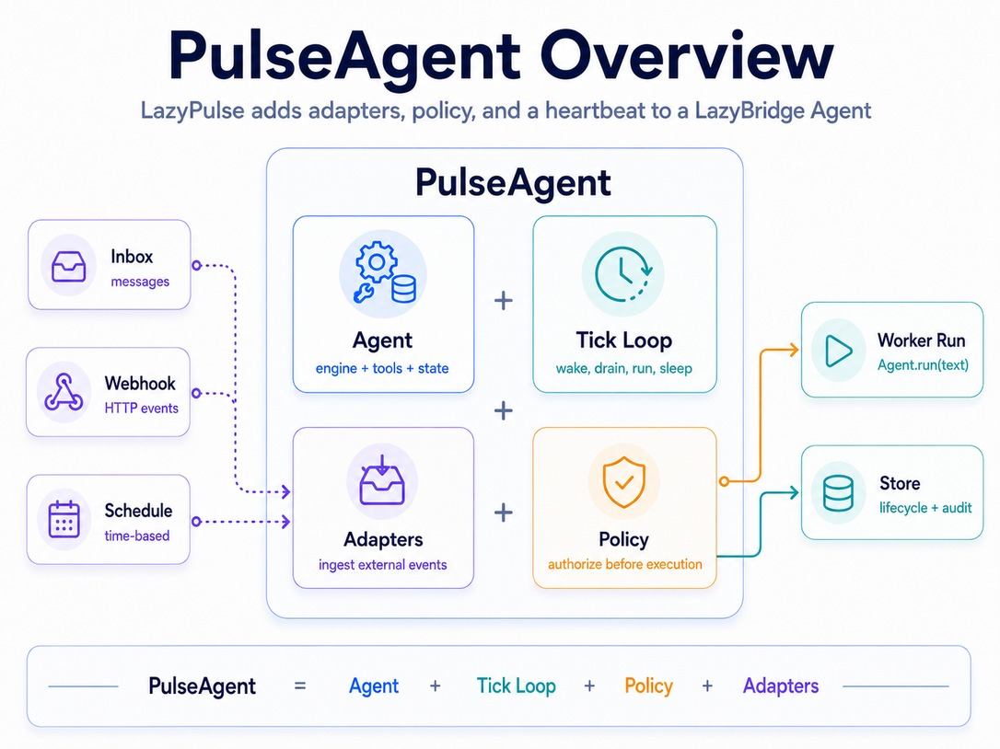
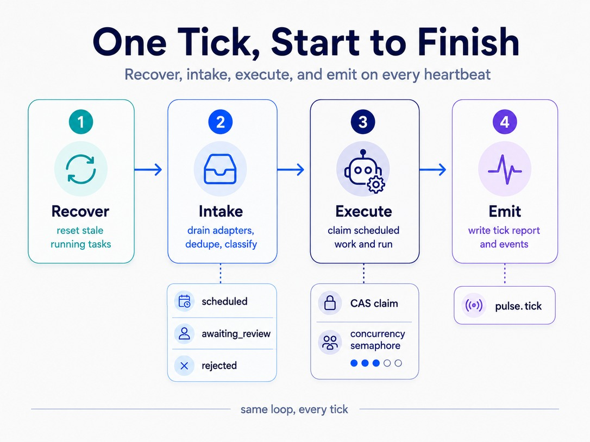
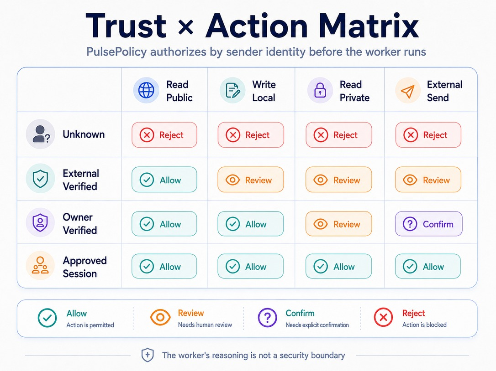

LazyBridge is the Python framework for composable LLM workflows.
Functions, agents, deterministic plans, humans and external systems all compose through one tool interface — with validation, checkpointing and tracing built in.

One abstraction, not five
Most agent frameworks split your system into chains, graphs, tools, agents, routers, and executors. LazyBridge collapses them into one recursive model: everything is a tool.
See how it composes →Fail at build time, not at 3am
Deterministic plans catch duplicate steps, broken references, type drift, and invalid sentinels before the first LLM call runs.
See validation →Nested systems stay traceable
Agents can call plans, plans can call agents, and sub-agents can become tools — while sessions, event logs, costs, and OpenTelemetry spans roll up automatically.
See Session →Under the hood
From a one-liner to governed multi-agent pipelines — one composition model throughout.









Same mental model: from a one-line agent to nested, checkpointed pipelines.
from lazybridge import Agent, LLMEngine, Plan, Step, Session, from_step
search = Agent(engine=LLMEngine("gpt-5.4-mini"), name="search")
summarise = Agent(engine=LLMEngine("gemini-2.5-pro"), name="summarise")
writer = Agent(engine=LLMEngine("claude-sonnet-4-6"), name="write")
research = Agent(
engine=Plan(Step("search"), Step("summarise")),
tools=[search, summarise], name="research",
)
article = Agent(
engine=Plan(Step("research"),
Step("write", context=from_step("research"))),
tools=[research, writer], session=Session(),
)
print(article("AI agents in 2026").text())
from lazybridge import Agent, AgentPool, LLMEngine, conclude
pool = AgentPool()
researcher = Agent(engine=LLMEngine("claude-sonnet-4-6", max_tool_calls_per_turn=1),
name="researcher", tools=[pool.as_tool(), conclude])
writer = Agent(engine=LLMEngine("claude-sonnet-4-6", max_tool_calls_per_turn=1),
name="writer", tools=[pool.as_tool(), conclude])
pool.register(researcher, writer) # register after construction
# one pool = one local action space; researcher and writer self-organise
# inside it. researcher may route("writer", ...); any agent may conclude(...)
print(researcher("Brief me on 2026 AI trends.").text())
The LazyBridge ecosystem
Not an agent framework — a composition runtime. A stable core, its extensions, and a finance data stack — one mental model.
Only LazyBridge is published on PyPI. Everything else installs from GitHub — copy the command on each card (append @vX.Y.Z to pin a release tag).
LazyBridge
The composition runtime. Build agents and pipelines where functions, plans, humans, and other agents all share one tool interface.
LazyPulse
Turn workflows into always-on governed services. Gmail push notifications, Telegram, and webhooks feed a tick loop that runs policy, requests review, and keeps an audit trail.
LazyTools
Connector clients, reusable tool providers, and safety wrappers for bringing external systems into LazyBridge without bloating the core.
LazyCrawler
Web crawl & search in three modes — pure (no-LLM), local-ML (zero tokens), and smart (LazyBridge LLM) — with a secure-by-default SSRF guard. Surfaced into agents through LazyTools.
market-data-hub
The single source of financial data for the ecosystem: a DuckDB warehouse with a read-only discovery, resolution and extraction API. Agents reach it through LazyTools’ datahub_* tools — ids in, bounded results out.
LazyFin (private)
Portfolio Manager AI — the finance domain layer on top of the whole stack: canonical data model, deterministic finance kernel (returns, exposure, risk, optimizer), security-selection scoring, and PM agents. Agents orchestrate and explain; deterministic engines calculate and enforce constraints.
From workflow to governed service.
LazyPulse runs LazyBridge agents on inboxes, webhooks and schedules, applies policy before risky actions, escalates to human review and logs every decision.
What's new
Key releases and milestones across the LazyBridge ecosystem.
-
LazyBridge 1.2.0 — a coding agent that may write, once someone says yes
A gated coding agent could never be asked about a write: the engine handed the runtime a read-only tool list, so the model simply never had
Write.ClaudeCodePolicy.extra_toolsgrants those names, and granting is not pre-approving — every call still routes through the approval gate. Becausefile_rootsconfinement is a hook over the file tools only,Bashhas no path sandbox at all: the engine now refuses at construction to grant it without a gate, rather than advertising a boundary it cannot deliver. Also in this release:CodexEngine(thread_source=…)andClaudeCodeEngine(tag=…)label the threads and sessions an engine creates, so a retention pass can find its own and leave your interactive ones alone. Coding agents in practice → · Changelog → -
LazyBridge 1.1.0 — Claude Code and Codex become engines
The two local coding runtimes are now ordinary LazyBridge engines: same
Agent,Memory,Sessionandtools=surface asLLMEngine, each reusing its own CLI login rather than an API key in the project.ClaudeCodeEnginespeaks to the Claude Agent SDK in-process;CodexEnginespeaks JSON-RPC tocodex app-server. Both keep durable conversations —persist_session=/persist_thread=hand back a handle a later process can resume, and a resumed conversation stops re-sendingMemory, because the runtime already holds the history. This release also addsDurableBlackboard: a to-do list in aStorewith claim, lease and attempt limits, so work interrupted by a crash returns to the queue instead of staying "in progress" forever. Claude Code engine → · Codex engine → -
DB registry & artifact catalog — find any repo's database, catalog any report
LazyTools adds a core, always-installed
registrymodule:KNOWN_DBSdeclares — in code, one PR at a time — which env var names which repo's database, so callers resolve a path instead of guessing an env var name. Alongside it, a per-repo SQLite artifact catalog (register_artifact/search_artifacts) lets scheduled jobs and agents register reports, digests, and analysis results as searchable metadata — without pushing raw payloads through an LLM's context.search_everywhere()fans out across every repo's catalog at once. market-data-hub, LazyCrawler, LazyStats, and LazyPortfolio are wired in already. See the guide → -
LazyBridge 1.0.1 — the first Stable release
lazybridge.__stability__moves"beta"→"stable": the core public API contract (Agent,Plan,Tool,Envelope) won't break without a major version bump. Guardrails and Checkpoint/resume are promoted Alpha → Stable in this release, backed by a live adversarial/load stress-testing pass —LLMGuardresisted a deliberate prompt-injection/tag-smuggling attempt, andPlancheckpoint/resume correctly resumed after a forced step failure without re-billing the completed step. Not everything is done: Native tools,HumanEngine/SupervisorEngine, Evals, and the Visualizer remain Alpha/Experimental, called out explicitly rather than glossed over. Maturity table → · Changelog → -
Event-driven Gmail — push notifications are the new default
Gmail now tells the agent when mail arrives instead of being polled:
GmailPushInboxarms Gmail'susers.watchonto a Cloud Pub/Sub topic (and re-arms it before expiry), receives push notifications on a token-protected endpoint, and makes onehistory.listcall per email received — zero Gmail API calls while the mailbox is quiet. At-least-once delivery with a persisted cursor that never skips mail, burst-safe draining, self-healing resync, and exponential backoff on adapter failures. Gmail push & polling guide → -
True token streaming for Plan & ReplanEngine
Agent(engine=plan).stream(…)now streams tokens live from each sequential step as the pipeline runs — watch it think step by step instead of waiting for one final block. Parallel bands stay silent (no token interleaving), early disconnects cancel the in-flight run, andPlan(stream_buffer=)bounds the queue. PlusPlan.store_write_is_current(): sidecar consumers can now mechanically detect the checkpoint crash-window instead of reconciling by hand. Plan streaming → -
ReplanEngine — the adaptive replan loop, with checkpoint/resume
The dynamic counterpart to
Plan: instead of a fixed DAG, a planner agent (built withoutput=PlanRound) decides the work one round at a time.ReplanEnginedispatches the tasks it emits — agents, plain functions, or pool routes alike — runningparallel=Truesiblings concurrently, then feeds the results back for the next round. Workers can be plain functions, so it works on a simple agent too. Passstore=+checkpoint_key=and it checkpoints after every round, so a crash resumes from the right round instead of redoing completed work — same single-writer semantics asPlan. ReplanEngine guide → · Dynamic re-planning recipe → -
Code Support Agent — delegate to Claude Code & Codex
LazyTools adds a Code Support Agent connector that puts Claude Code and Codex behind a LazyBridge agent — each in two modes: CLI (the CLI is the agent: one call, one delegated task) or MCP (the CLI exposes its own tools for your agent to orchestrate). Read-only by construction: write access lives behind the gated
CodeWriteToolscapability (mandatorybase_dirsandbox + one-shot confirmation).build_cli_collaboration()runs the default three-session flow — Claude Code analyses, Codex critiques, a synthesizer writes the plan; execution is opt-in and sandboxed. See the guide → -
Pool chains — dynamic workflows from bounded local action spaces
AgentPoolisn't just a routing registry — it's a bounded local action space: the set of specialists an agent may reach directly via a singleroute(agent_name, task)tool. Give a chosen agent access to a second pool and it becomes a gateway that links one local world to the next, composing a pool chain. The builder defines the local worlds and transition points; the runtime path emerges from agent decisions. WherePlanis the static workflow runtime (topology known up front),AgentPoolis the dynamic one — andconclude(…)lets a terminal agent end the whole chain. Pair withLLMEngine(max_tool_calls_per_turn=1)for a single, traceable path. Dynamic graph → · Pool chains → -
First framework to support Claude Opus 4.8
LazyBridge ships
claude-opus-4-8support on day one — adaptive thinking, no-sampling mode, updated thinking-token extraction (SDK ≥ 0.105), and tier cascade (top → opus-4-8,expensive → opus-4-7). -
LazyPulse v0.2.0 — cron triggers & PulsePolicy
Schedule agents on cron expressions with timezone support.
PulsePolicygates every action on sender trust level before the worker runs, with concurrency-safe compare-and-swap scheduling. -
LazyBridge v0.9 — one framework becomes three
v0.9 marks the point where a single monolithic package was split into three focused libraries: LazyBridge (the composition runtime), LazyPulse (always-on governed services), and LazyTools (connector clients and safety wrappers). Each package ships and versions independently, so teams only install what they need.
Native adapters for the leading providers — plus any model via LiteLLM or LM Studio